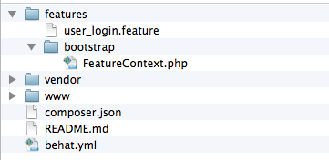

Behavior Driven Development
@aczietlow
Lead Software Engineer, MindgrubA tale of 2 parts
- BDD
- Behat/Behave
- This is the technical part
- Feel free to run away
Behavior Driven Development
Behavior-driven development is an "outside-in" methodology. It starts at the outside by identifying business outcomes, and then drills down into the feature set that will achieve those outcomes. - Dan North*
^^ literally wrote the book
Examples of Examples
Given Jane bought a laptop
And the laptop cost $500
When Jane returns the laptop
Then she should have $500
What is it good for
- Verifies software features fulfill actually requirements
- Provides human readable requirements to describe a feature and how it should work
- A blending of functional testing and acceptance testing
Why Bother
Better understanding of your product

Why bother
- Better acceptance criteria
- Less regression
- Quality
Examples
Given a context
When some event happens
Then something *should* occur
How to do the thing?
# Comment
@tag
Feature: Eating too many cucumbers may not be good for you
Eating too much of anything may not be good for you.
Scenario: Eating a few is no problem
Given Alice is hungry
And she likes vegetables
When she eats 3 cucumbers
Then she will be full
How to do the thing?
- Have a conversation
- Capture the conversation
- Automate the conversation
The conversation
- Is there any context where this scenario won't be true
- Are there other outcomes we care about?
- Ask for examples
Given Jon Snow wants to sign up for facebook
When he enters his first name
And he enters his last name
And he enters his email address
And he re-enters his email address
And he enter a new password
And specifies a gender
And enters his birthday
And submits his request
Then a Facebook account is created
And account name is set as Jon's email address
And a confirmation email is sent to Jon
Tooling

(You can leave now)
BDD Frameworks
- Behat - PHP
- Behave - Python
- JBehave - Java
- Cucumber - Java
- Cucumber.js - Javascript
Behat
Installation
composer.json
"require": {
"behat/behat": "^3.0",
}
a yaml config file
default:
suites:
default:
contexts:
- FeatureContext
- Drupal\DrupalExtension\Context\DrupalContext
extensions:
Behat\MinkExtension:
Toolchain
- Browser (use chrome)
- Drivers - Controlling the browser
- Emulators - Glorified http clients
- Controllers - controls real browser
- Mink - Abstraction layer that sits on top of drivers
- Behat - scenario step definitions to executable code
Define Features
Tests are saved in .feature files
User Login
Client Requirement
I want to be able to log into my website in order to edit my content.
User Login
Requirements we can use
As a an anonymous user,
I want to be able to log into my website,
So that I can edit my content.
User Login
Acceptance Criteria
What does it mean to be logged in? How do we know that we are logged in?
Given I am an anonymous user
When I am at "user/login"
And I fill in "name" with "admin"
And I fill in "pass" with "admin"
And press "Log in"
Then I should see the link "Log out"
User Login
Acceptance Criteria
How do we check can edit content.
Given I am logged in as a user with the administrator role
When I am at "node/add/page"
Then I should see "Create Basic page"
And I should get a 200 HTTP response
User Login
Slap it in a feature file and boom you have your test.
#./features/user_login.feature
@api
Feature: User Login.
As a an anonymous user,
I want to be able to log into my website,
So that I can edit my content.
Scenario: I can log in.
Given I am an anonymous user
When I am at "user/login"
And I fill in "name" with "admin"
And I fill in "pass" with "admin"
And press "Log in"
Then I should see the link "Log out"
Scenario: I can edit content
Given I am logged in as a user with the administrator role
When I am at "node/add/page"
Then I should see "Create Basic page"
And I should get a 200 HTTP response
Executing tests
$ bin/behat features/user_login.feature

The Glue
/**
* @Given I am an anonymous user
* @Given I am not logged in
*/
public function assertAnonymousUser() {
// Verify the user is logged out.
if ($this->loggedIn()) {
$this->logout();
}
}
/**
* Logs the current user out.
*/
public function logout() {
$this->getSession()->visit($this->locatePath('/user/logout'));
$this->getUserManager()->setCurrentUser(FALSE);
}
Useful Resources
Fin
Question?